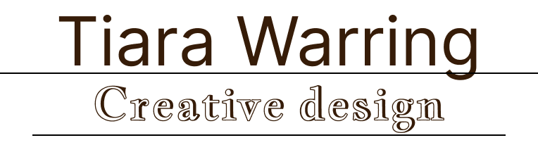
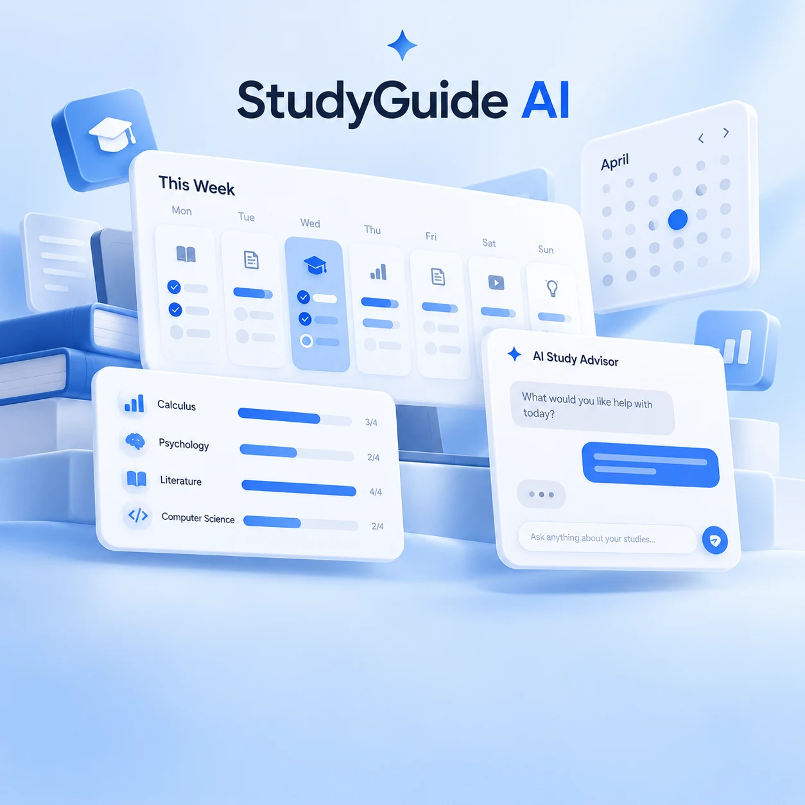
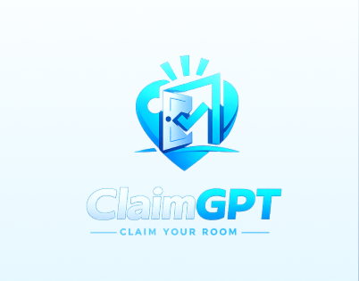
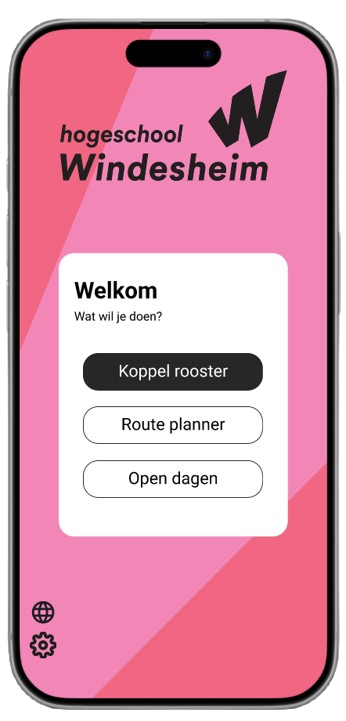
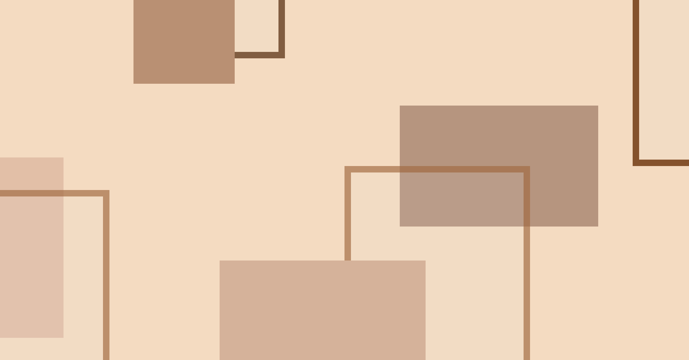

Portfolio • Tiara Warring
Creative design with structure, clarity, and a bit of attitude.
I'm Ti, an ICT student with a strong love for visual design, UX thinking, and building interfaces that feel both clear and full of character. From mobile concepts to AR experiments, I like turning ideas into experiences people can actually use.
- UX/UI Wireframes, flows, and high-fidelity concepts
- Web HTML, CSS, and portfolio-driven front-end work
- Creative tech Visual storytelling, AR, and interactive ideas
About me
I design with both aesthetics and logic in mind. I enjoy shaping concepts into something tangible: a clear userflow, a polished interface, a stronger visual identity, or a page that finally feels like it says what it should.
Right now, my focus sits at the intersection of design and development. I like projects where structure matters just as much as style, and where every screen has a reason to exist.
Projects
A mix of UX/UI work, concept development, and creative experiments. Some are fully documented already, others are still growing into their final case-study form.

StudyGuide AI
Van studieoverzicht naar eigen regie: research journey en de Future Simulation Deadline Diaries.
Bekijk het onderzoek
ClaimGPT
Reservation and room-claiming concept focused on clarity, flow, and smart use of space.
View project
Campus Navigation Companion
A hackathon project where a campus navigation companion was developed.
View page
Business project
A flexible project page prepared for a future case study without breaking the visual flow of the site.
View page
AR Experience
An experimental augmented reality project built around concept, scanning, and visual atmosphere.
Open project